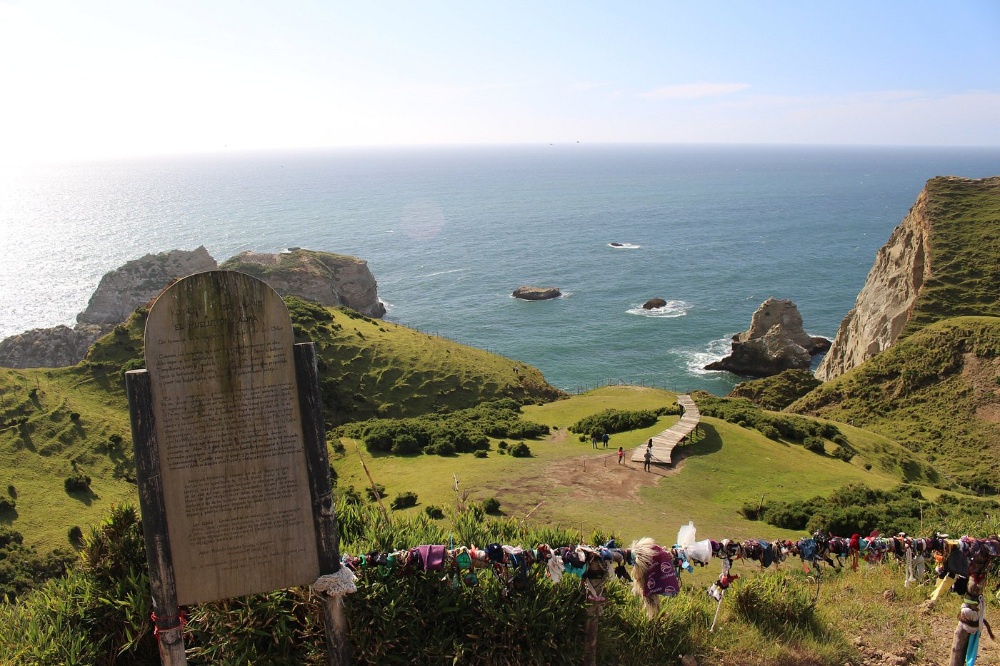
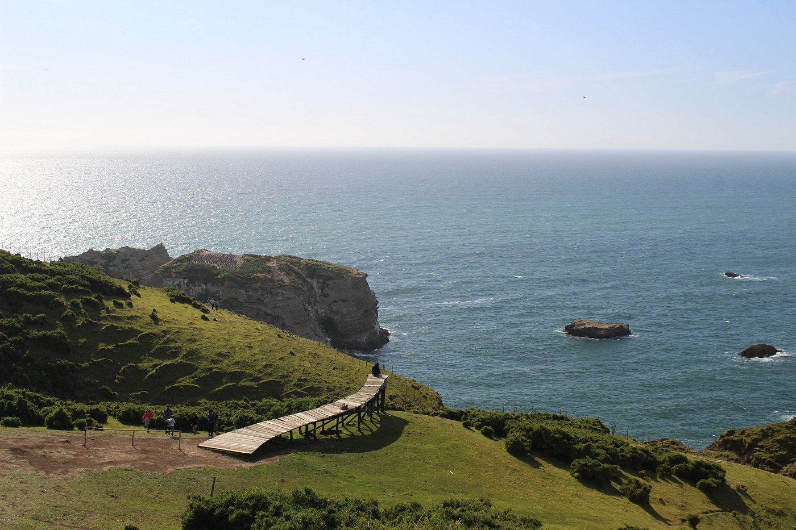
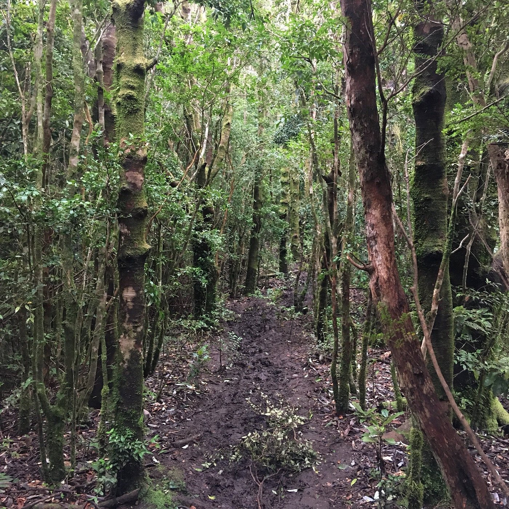
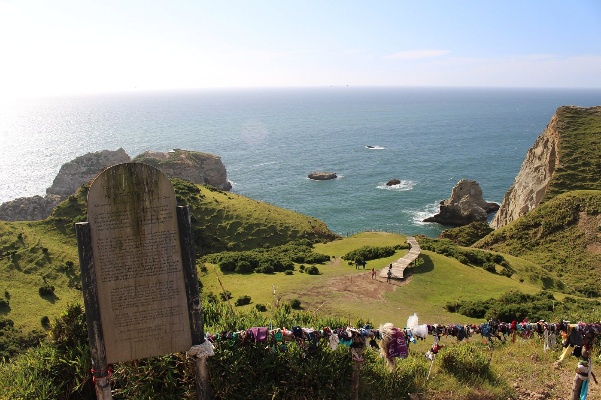
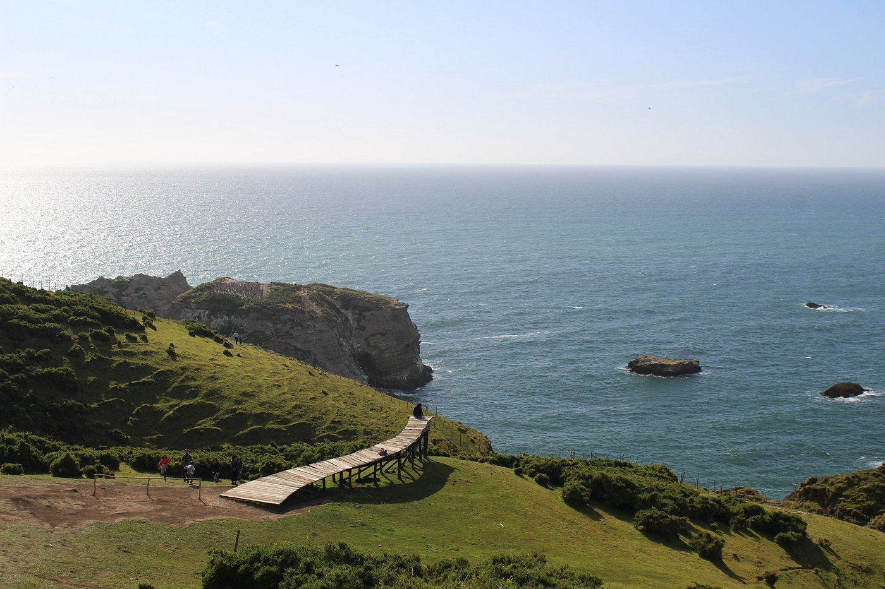
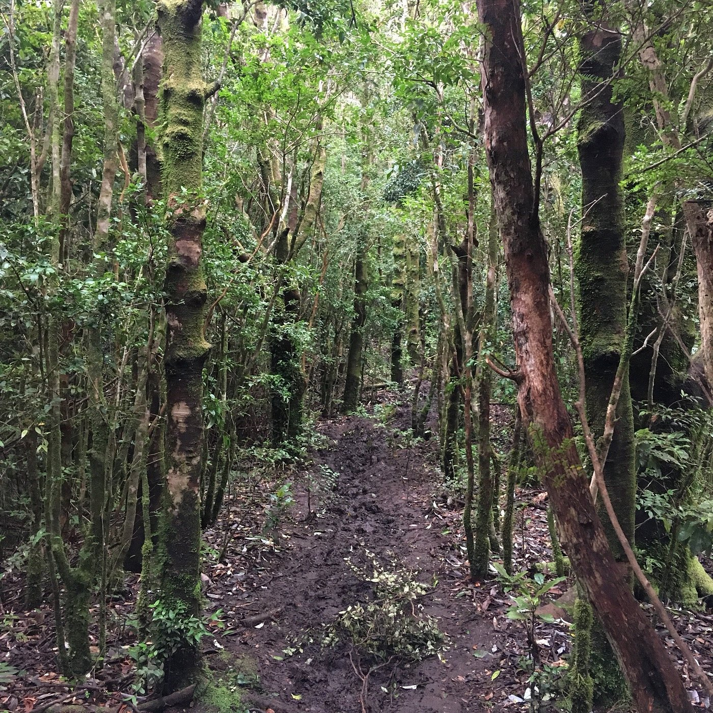

Muelle de las Almas
Un viaje entre la mitología y el Océano Pacífico.
El Muelle de las Almas es una impresionante escultura de Marcelo Orellana Rivera, inspirada en la leyenda chilota del barquero Tempilcahue, quien transportaba las almas de los muertos al más allá.
Para llegar, se realiza una caminata sobre los acantilados de Punta Pirulil, ofreciendo vistas espectaculares del océano. El sendero, de dificultad moderada, culmina en esta obra de arte que se funde con el paisaje, creando un espacio para la contemplación y la fotografía.
Datos del Sendero
- Dificultad: Fácil - Media
- Duración:45 - 60 min (ida)
- Ideal para: Vistas y fotografía
- Entrada: Se requiere pago (propiedad privada)
 





Recomendaciones Prácticas
Calzado Adecuado
El sendero puede tener barro, especialmente si ha llovido. Usa zapatos de trekking o calzado firme y cómodo.
Consulta el Clima
El tiempo en Chiloé cambia rápido. Revisa el pronóstico y prepárate para el viento y posibles lluvias, incluso en verano.
Agua y Snacks
No hay tiendas en el lugar. Asegúrate de llevar suficiente agua y algo para comer y reponer energías.


{kind=link}
{kind=link}
{kind=link}